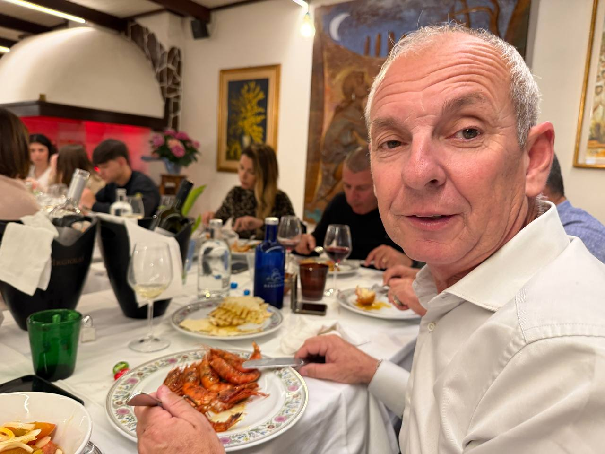

Il finale perfetto di una giornata fatta bene: stanchi il giusto, contenti davvero, e con quella faccia da “oggi ne è valsa la pena”.
Una pagina da mandare a chi vuoi per dire una cosa semplice e vera: oggi siamo stati bene. Monte Sirai, il sole, le rovine, i panorami, il pranzo, le risate e le persone care hanno fatto il resto.

In breve: è stata una di quelle giornate che ti restano addosso bene. Monte Sirai ci ha dato il paesaggio e la storia, ma il bello vero lo hanno fatto la compagnia, i dettagli, i sorrisi e il tempo passato insieme senza fretta.
“Ci sono giornate che finiscono, e giornate che restano. Questa ha deciso di restare.”
Versione sentimentale ma assolutamente meritata dei fattiUna selezione visiva della giornata, dal sito al tavolo, dai dettagli piccoli ai momenti che fanno davvero il ricordo.